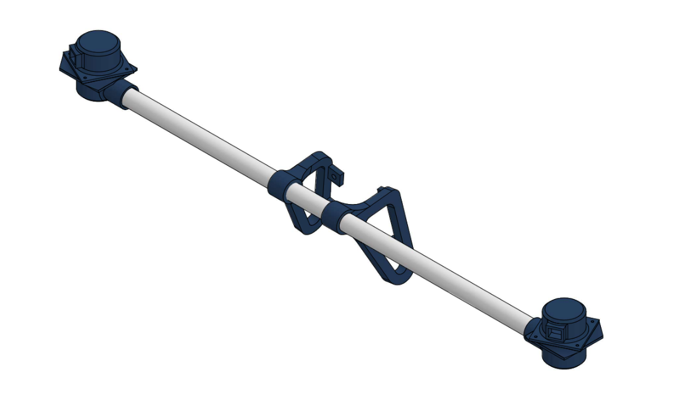
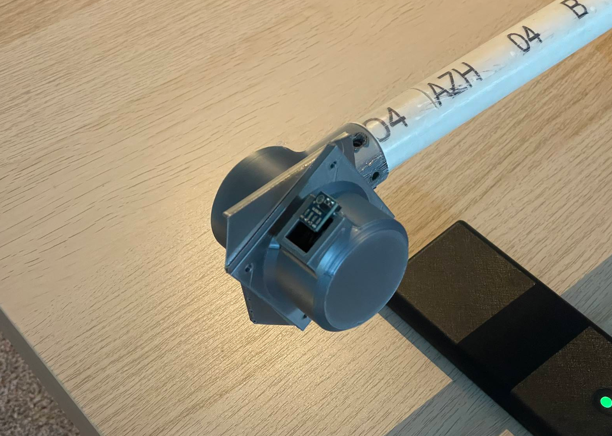
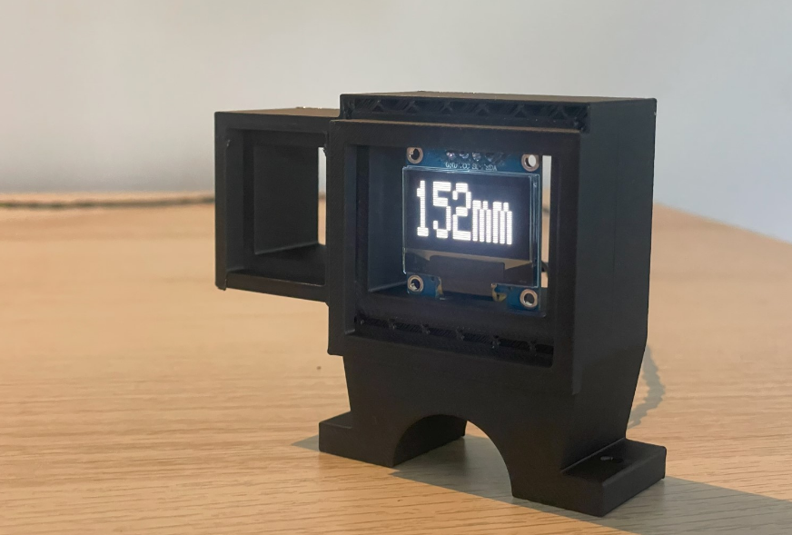
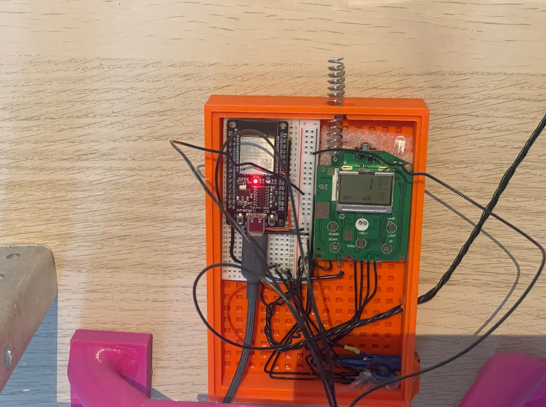
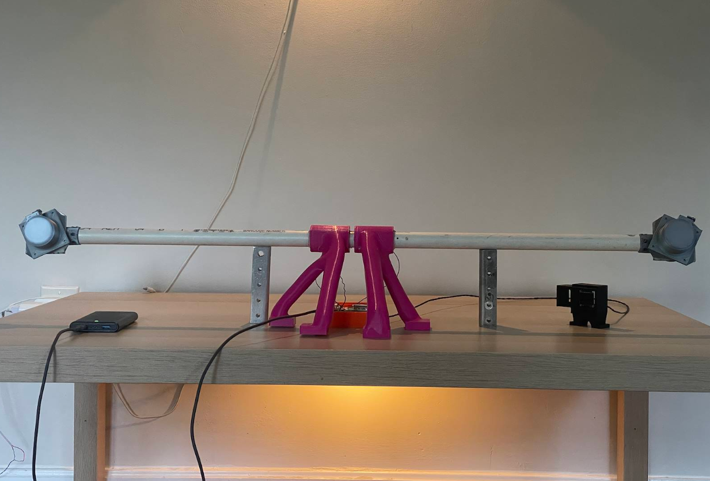

Two LiDAR Sensors
Two VL53L0X time-of-flight sensors monitor the left and right blind spots of the vehicle.
Embedded Systems • Sensors • Electric Vehicle
L-Guard is an ESP32-based blind-spot detection system developed for an electric racing vehicle. The system uses two LiDAR sensors to monitor both sides of the vehicle and provides the driver with real-time visual warnings when another vehicle enters a blind spot.

Two VL53L0X time-of-flight sensors monitor the left and right blind spots of the vehicle.
An ESP32 processes distance measurements and controls the driver-warning system in real time.
Visual indicators warn the driver without requiring them to remove their hands from the steering controls.
Design and Development
The system was developed to improve situational awareness during endurance racing, where limited visibility can make it difficult for the driver to identify vehicles approaching from either side.
Each LiDAR sensor continuously measures the distance to nearby objects. The ESP32 evaluates these measurements and activates the corresponding warning indicator when an object enters the programmed detection range.
The sensor locations, detection thresholds, and warning controls were refined through repeated testing to reduce false alerts while maintaining fast driver feedback.

Development Gallery
The system was developed through component testing, enclosure design, wiring integration, and testing on the completed electric vehicle.


